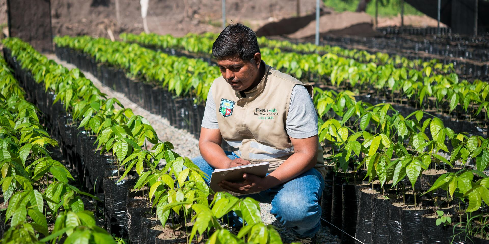

AgroSmart es una startup tecnológica enfocada en desarrollar soluciones inteligentes para fortalecer el sector agrícola peruano mediante el uso de Inteligencia Artificial, Big Data y monitoreo en tiempo real.

En AgroSmart creemos que la tecnología puede transformar el futuro del agro. Nuestra plataforma ayuda a agricultores y cooperativas a tomar decisiones más inteligentes, reducir riesgos y optimizar recursos mediante herramientas digitales accesibles, modernas y sostenibles.
Desarrollar soluciones digitales innovadoras basadas en Inteligencia Artificial y análisis de datos.
Ser la startup líder en Perú y Latinoamérica en tecnología agrícola inteligente.